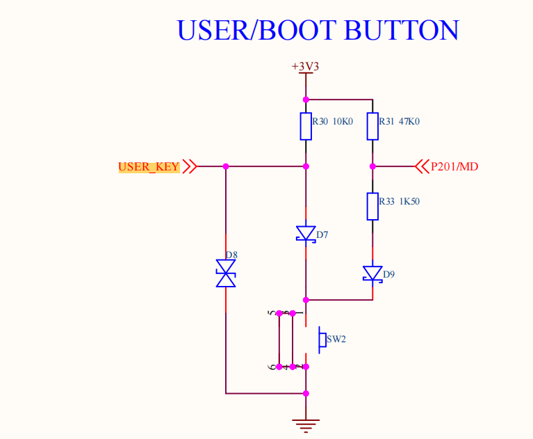
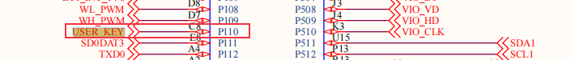
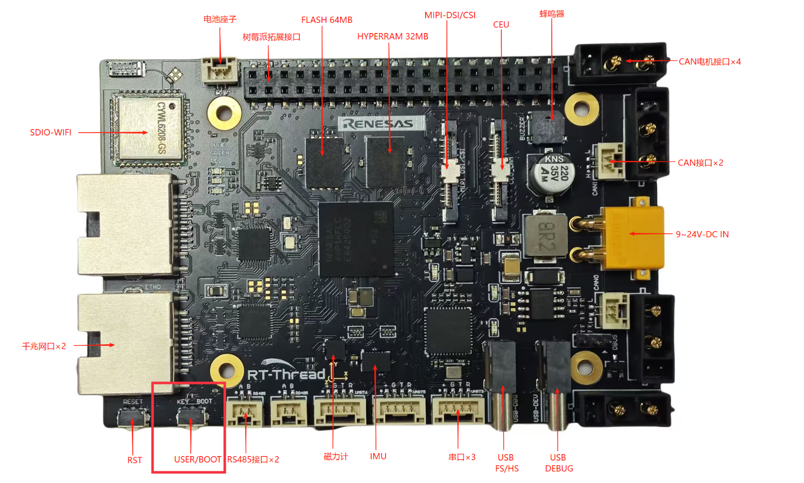
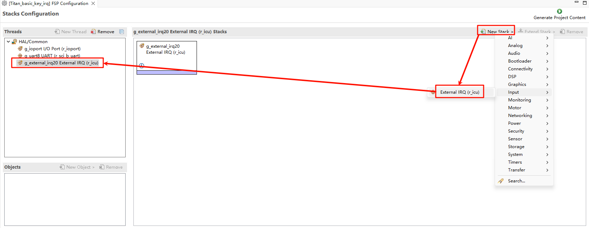

RA8P1 Titan Board 按键中断使用说明
中文 | English
简介
本例程主要功能是通过板载的按键 KEY 实现外部中断，当 USER_KEY 被按下时，改变 LED_G(Green) 的亮灭状态。
硬件说明


如上图所示， USER_KEY 引脚连接单片机 P110 引脚, KEY 按键按下为低电平，松开为高电平。
KEY 在开发板中的位置如下图所示：

FSP配置
首先下载官方FSP代码生成工具：
https://github.com/renesas/fsp/releases/download/v6.0.0/setup_fsp_v6_0_0_rasc_v2025-04.1.exe
安装成功之后我们双击 eclipse 目录下的 rasc.exe，并打开 Titan_basic_key_irq 工程目录下的配置文件 configuration.xml：
下面我们新增两个Stack：New Stack->Input->External IRQ(r_icu)：

接着我们需要在引脚配置那开启IRQ功能，根据下图选中我们要使能的中断引脚：USER_KEY(IRQ20)：

回到Stacks界面，设置 IRQ20，配置对应的中断名称、通道号以及中断回调函数：

示例代码说明
本例程的源码位于/projects/Titan_basic_key_irq。
USER_KEY 对应的单片机引脚定义如下:
/* 配置 key irq 引脚 */
#define KEY_PIN BSP_IO_PORT_01_PIN_10 /* Onboard KEY pins */
LED灯的单片机引脚定义如下:
/* 配置 LED 灯引脚 */
#define LED_PIN_B BSP_IO_PORT_00_PIN_12 /* Onboard LED pins */
#define LED_PIN_G BSP_IO_PORT_06_PIN_13 /* Onboard LED pins */
按键中断的源代码位于/projects/Titan_basic_key_irq/src/hal_entry.c中，当按下 USER_KEY 按键，会改变绿色 LED 的亮灭状态。
#define LED_PIN_B BSP_IO_PORT_00_PIN_12 /* Onboard LED pins */
#define LED_PIN_G BSP_IO_PORT_06_PIN_13 /* Onboard LED pins */
#define KEY_PIN BSP_IO_PORT_01_PIN_10 /* Onboard KEY pins */
volatile rt_bool_t flag = 0;
void key_callback(void)
{
if (flag)
rt_pin_write(LED_PIN_G, PIN_HIGH);
else
rt_pin_write(LED_PIN_G, PIN_LOW);
flag = flag ? RT_FALSE : RT_TRUE;
}
void hal_entry(void)
{
rt_kprintf("\nHello RT-Thread!\n");
rt_kprintf("==================================================\n");
rt_kprintf("This example project is a key routine!\n");
rt_kprintf("==================================================\n");
LOG_I("Tips:");
LOG_I("You can press the button to run the test case for button interruption.");
LOG_I("Use the buttons to control the on/off state of the green LED.");
rt_pin_mode(KEY_PIN, PIN_MODE_INPUT_PULLUP);
rt_pin_attach_irq(KEY_PIN, PIN_IRQ_MODE_FALLING, key_callback, RT_NULL);
rt_pin_irq_enable(KEY_PIN, PIN_IRQ_ENABLE);
while (1)
{
rt_pin_write(LED_PIN_B, PIN_HIGH);
rt_thread_mdelay(1000);
rt_pin_write(LED_PIN_B, PIN_LOW);
rt_thread_mdelay(1000);
}
}
编译&下载
RT-Thread Studio：在RT-Thread Studio 的包管理器中下载 Titan Board 资源包，然后创建新工程，执行编译。
编译完成后，将开发板的 Jlink 接口与 PC 机连接，然后将固件下载至开发板。
运行效果
按下复位按键重启开发板，初始状态下的 LED_G 处于灭灯状态，当按下 USER_KEY 时，LED_G(Green) 的亮灭状态会改变。